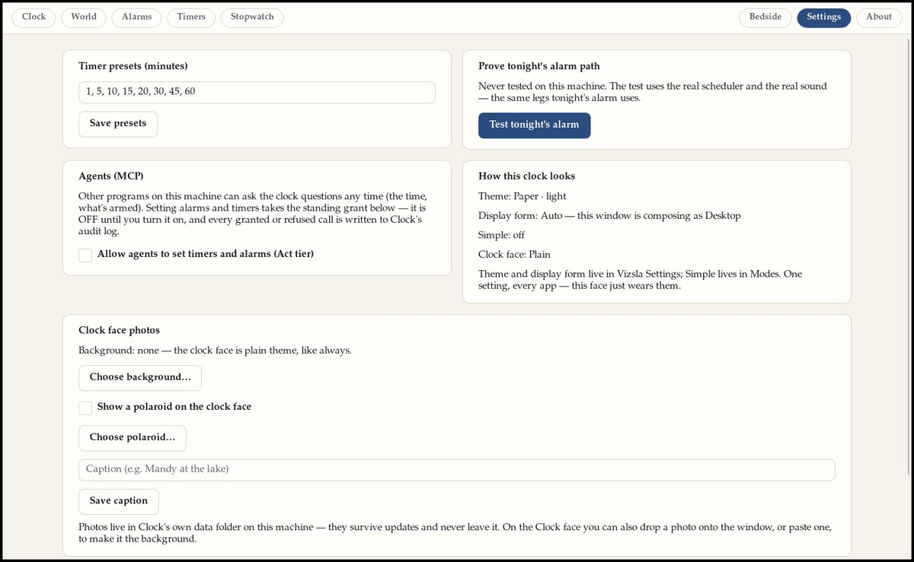
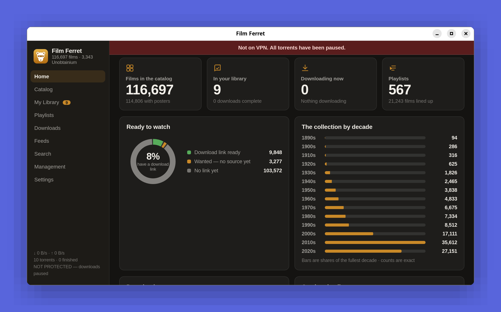
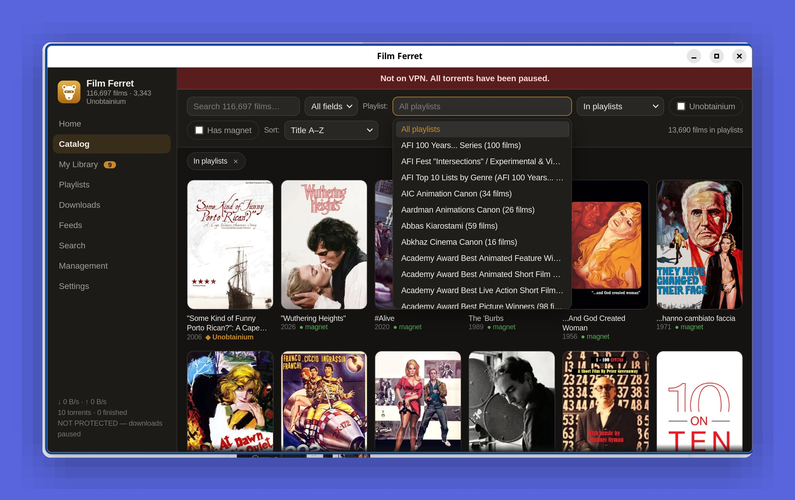

The roster
What’s inside
Every app below exists and is installed on the machines that run Vizsla today — names and versions taken from the same Family Catalog the fleet installs from (generation 703, read 13 November 2026). Things still being built are not listed as done. That’s the rule for this whole site.

Try one piece today: System Profiler
Vizsla OS itself has no download yet — but this app does. Linux System Profiler is Vizsla’s own machine profiler and updates hub — think Apple’s System Information, for Linux, plus the thing Apple never gave it: one place to see driver, firmware, and software updates, and apply them only when you say so, group by group. It also stands alone, free, on any Linux PC.
The public test build is v0.8.8 — a single binary for
Linux (x86_64, about 22 MB). Download it, make it executable
(chmod +x), and run it. No installer, no account. The honest limits,
in its own words: it is early development with rough edges, tested primarily on
Ubuntu-family systems, and a few steps behind the 0.9.3 build that ships inside
Vizsla OS. Bug reports genuinely shape the next release.
Download System Profiler v0.8.8 Release notes & checksums · The project on GitHub
The day
- Arrival0.11.2The calm Today page the day starts on.
- Elefunk0.7.5Mail, tasks, calendar, and people — and a real phone line: calls, texts, and voicemail in the same place.
- Note Paper1.1.3The family notebook — real Markdown files in your Notes folder.
- NOTE PAPER0.1.0Sticky notes that live on your desktop — checkable task lines and all.
- Weather1.1.4Calm, detailed weather for your places.
- Clock1.4.7Clocks for here and everywhere — the world's top cities, one tap away.
- Vizsla Time0.1.2The family's clock and calendar, living in the bar.
- Notifications1.7.2Notifications that rank by what matters, not by who shouted loudest.
- Quiet Bell0.1.0A calm history of what your machine has told you.
- Modes & Focus0.2.6Modes for the day — and who may interrupt, and when.
Your stuff
- Fable Files0.1.41The file manager. Your files on shelves, not in piles.
- Photos1.3.2Your photo library by year, month, and day — with the facts from the photos themselves.
- Art Gallery0.4.2The picture frame, grown up — your art and photos owning the big screen.
- Poster Player1.3.2Posters for your screens — composed once, played only on the shape they were made for.
- Reader1.10.3Your books and PDFs, your place kept — with a studio for forms, signatures, and true redaction.
- Scanner0.6.5The scanner, with pages stood upright and read clean.
- Film Ferret0.1.0A film library: your collection, its catalog and the playlists to share plus tracking unobtainium collection - films that are no longer available in the USA.
- Fable Clip0.2.5Clip, don't haul — paste a link, pick the moment, keep only that piece.
- Rabbit Ears0.7.30Television — live channels and the guide on a calm screen, with Continue Watching, catch-up, recording, and profiles.
- Audio Waves1.54.19Music, podcasts, radio, and audiobooks — with transcripts you can search, made on your own machine.
- Songdog0.1.3The family MIDI player — the arcade songbook and your own files, synthesized live.
- The Attic1.2.2A clipping box — articles saved in full, on your machine.
- Food Stuff0.6.3Groceries and meal planning — the list, the month, and a pantry check before anything commits.
- Menu Board0.2.2The restaurant board — your menu on the big screen, read live from Food Stuff and never re-typed.
- Island Vault1.1.5An offline library, shelved by topic.
- Sorts1.0.2The font manager — every font shown in its own face.
- Characters2.1.3Every character and emoji, fully offline.
- Screensnips0.4.7Screenshots, from any workspace — copied the moment you take them.
- Upscaler1.0.5AI image enlarging, on your machine.
- Camera1.2.1The camera — photos that remember where they were taken.
- Vizsla Arcade0.11.27Thirty-six games in one cabinet — the full slate, phone face included.
- Barrel Climb0.1.0The barrel-climbing game, standing on its own — neon decks and the family's painted cast.
- Vizsla Jigsaw1.0.3The family jigsaw — pictures cut into pieces, put back together.
- Vydra0.6.1Games wearing the classic console interfaces, rebuilt true to the real machines.
- Garage Log0.1.1Your car's service history, kept by miles and by months.
- Upkeep0.1.0The house's quiet deadlines — filters, batteries, and flushes, tracked before they lapse.
- Washing Machine0.2.4Washes files before you share them — strips hidden metadata and flags personal details hiding inside.
Finding out & getting things done
- Sniff Search1.15.1Search that answers with its sources named.
- Vizsla Json Reader1.0.0JSON files opened like documents — read, searched, and folded, in the family style.
- Vizsla Help1.0.9The manual — the rules the system lives by, in plain words.
- Vizsla Shelf (App Store)0.1.1The family app store — hand-picked apps in magazine issues.
- Shortcut Hound0.1.3Every keyboard shortcut, one keypress away.
- Typehound Expander1.0.0Type less. Typehound fetches the rest — type a short trigger and the full text lands.
- Bear Bucks1.5.2The register and the books for a small business.
- Bills & Claims Desk0.2.7Bills and claims, worked as cases — ledgers, payers, and the paper trail in one desk.
- Hiring Desk0.2.2The recruiter's book — the jobs you're hiring for, the people who applied, and the pipeline.
- Safety Log2.0.1The job-site safety binder — toolbox talks, hazard notes, and incidents.
- Medical1.4.1A private health record — one encrypted store, on your machine.
- Family Papers2.0.1A will, a power of attorney, and a health-care directive — guided, in plain words, state by state.
- Moving Kit1.1.1Everyone who has your old address — in the order to tell them.
- First Aid0.3.0Plain words for known problems — what happened, how serious it is, and what to do.
- Secrets1.7.14Passwords and accounts, kept in one guarded store — passkeys included, with fingerprint unlock.
- Phone Launcher0.7.12The phone-shaped face of the same system.
- Dash Launcher1.3.0The car's face — big buttons for the dash, honest about what the car is doing.
- TV Launcher0.3.7The television's home — five calm tiles, no ads, no storefront.
- Fetch0.2.2The local face of Vizsla's AI front door.
- Clip Kennel0.2.2Clipboard history with manners — things copied from password apps are never kept.
- Plan a Trip0.1.1A trip wizard that shows you the finished plan before anything is sent — and never invents an itinerary.
- Plan the Week0.1.1Six questions over your real calendar, and the week is planned — big type, no fuss.
- Write a Letter0.1.1Letters shaped correctly from a short intake — cover letters to thank-yous — sent, printed, or saved.
- Write a Resume0.2.1A résumé that asks only the questions your kind of work needs, with every answer kept in one bank.
- WordCraft Plus0.16.8Writing with a typewriter's focus — one scene model, a binder and a corkboard, and a lens for echoes in your prose.
- Printer0.4.2Your printers, each wearing a picture of itself — queues and jobs in plain sight.
- Prompter0.1.1The teleprompter — read to the camera, not at it.
- Vizsla Calculator1.7.5The calculator — including a voice-only face for the dash.
Underneath — the system itself
- Vizsla Settings1.16.6Every knob, in one house.
- System Profiler0.10.2What your machine is doing, in plain sight — live charts and a history you can scrub.
- Vizsla Connect0.1.4The fabric between your machines: discovery, pairing, and the catalog itself.
- Vizsla Panel Host0.2.13The family's dock bar itself — the panel that carries your pins and status.
- Vizsla Workspaces0.2.8Named workspaces — Home, Work, School — standing ready whether they're open or not.
- Vizsla Overview0.1.1Every window, every workspace, at a glance.
- Vizsla Exposé0.1.0Show all windows — every open window as a live thumbnail, grouped by workspace.
- Vizsla App List0.4.0The app list, with your profile at the door.
- Vizsla Desktop Menu0.2.3The desktop right-click menu, in the family style.
- Family Icon Themes2.7.22The family's icon themes — every app drawn in the same hand.
- Screen Saver0.4.6Screen savers that belong to your theme — the theme's art, come alive.
- The Salute0.2.4The session screen behind Ctrl+Alt+Del.
- Pointer0.5.5Pointer and camera settings — cameras are off until you say so.
- Pipette1.0.4The color picker.
- Vizsla Ruler0.3.7A screen ruler that measures in real units, and says where every number came from.
- Retrieve0.1.0Backups — plug in a drive and it becomes a copy target.
- Drive Utility1.3.0Drives, cared for — deep health reads, backups with a fingerprint, and a verify pass that proves the copy.
- Vizsla Tray0.2.2The system tray: network and the small machinery, in one place.
- Terminal1.2.2The terminal — a file navigator with manners, in the family style.
- Caffeine0.1.6Keeps the machine awake while you ask — and lets go when you quit.
- Phone Home0.2.2Which apps talked to the network, per app, out in the open.
- Network Map1.0.1Your network drawn as a map — every machine in the house, seen live.
- Phone Book (Local IP Network Ports Directory)1.1.0Every port on every machine in the house, named in plain English.
- Keyboard Switcher1.0.2Switch keyboards from one sheet.
- Vizsla Keyboard0.3.3The on-screen keyboard, with Secrets autofill.
- Text Services — Dictation0.2.0Dictation that types where you point it.
- Sound Desk0.1.2The sound editor — what every tap, alert, and theme sounds like, tuned in one place.
- Sound Check0.5.3Sound and Bluetooth that route themselves — and a troubleshooter that explains itself.
- Vizsla Sync1.0.0Your machines, one folder — synced box to box, with no third party in the middle.
- Governor Public0.1.3Your projects and scheduled work, on one calm desk.
- Vizsla Torrent Daemon0.1.3The one torrent engine the whole system shares.
- Island Vault Daemon (vaultd)0.1.2The quiet engine under Island Vault.
- Furever Stick0.1.1Makes a Vizsla install stick: you run it, it does the work.
AudioWaves 1.54.19
The music player. Your files, played as they are — and when something in the path changes them, AudioWaves says so, in plain words, under the track that is playing.
FLAC, kept whole
FLAC files play losslessly, including 24-bit and high-sample-rate recordings. The line under the track names what is playing — for example, “FLAC 24/96” — from the file itself, not from its name.
DSD, sent as DSD
DSF and DFF files play through AudioWaves’ own DSD reader. The DSD bits ride to a DAC that accepts them as DoP — DSD over PCM frames at 176.4 kHz — untouched by volume, effects, or resampling, and the playing line says “DSD via DoP” while it happens.
Your DAC, picked by name
Settings has an output picker that lists the devices your machine can actually play through — a USB DAC among them — with the rates each one owns. Two ways to play: Follow the music, which asks the shared sound system to run the device at each song’s own rate, or DAC Direct, which gives the device to AudioWaves alone and applies no digital volume at all.
Bit-perfect, when it is
Bit-perfect mode stands the extras down — no equalizer, no ReplayGain, no resampling. AudioWaves tries the recording’s own sample rate first, and only prints “bit-perfect” while the path really is unchanged. If a device tops out below a track’s rate, the track is resampled to the best rate that device has, and the Signal Path line names the change instead of hiding it.
A signal path you can check
Every playing track carries a Signal Path: the source, each step the sound takes, and the device at the end, proven by reading the device back — its real rate and format — not by trusting what was asked for. When a read-back can’t be had, the line says the device state is unverified rather than guessing.
Music in more than one room
The Rooms room plays the house together. AudioWaves can send what it is playing to other rooms, or join another source as a room itself, in sync — timing is measured, and the room says how close it is. It speaks Sendspin, an open whole-home protocol, so rooms are not limited to copies of AudioWaves, and it also runs the family’s own whole-home groups, where a box joins only when someone at that box says yes.
Playlists, yours and brought-in
Make playlists by hand, save what is playing as one, or let a smart playlist keep itself — Recently Added, Never Played, and Back Again arrive already made. Playlists you already have come in too: M3U, M3U8, and XSPF files import, and the importer tells you how many entries matched music in your library. Playlists live in AudioWaves’ own library on your machine.
Playlists that live in more than one place
If your playlists are split across services — some in Apple Music, some in Spotify, Tidal, Napster or SoundCloud — we recommend TuneMyMusic. It copies playlists from one service to another and, on its paid plan, keeps them in sync: change a playlist in one place and the copy follows. It is a website, not another app to install.
To be plain about it: TuneMyMusic is not ours. Vizsla does not make it, does not sell it, and gets nothing if you sign up. We recommend it because it does this one job well, and because it does not hold your playlists hostage — it can export a playlist as a file (M3U, CSV, TXT or XML) that stays on your own machine. A file like that is one honest way to bring a playlist into a local player such as Audio Waves, instead of leaving it locked inside a streaming service.
The honest price, checked November 2026: there is a free tier, capped at 500 tracks, with export to a text or CSV file. Syncing needs the Premium plan — $24 a year, or $5.50 a month, cancel anytime. Premium removes the track cap and allows up to 20 automatic syncs. Prices change, so check the live figure before you pay: TuneMyMusic plans · How its transfers work
Bringing a playlist home, exactly: in TuneMyMusic, export the playlist as an M3U file (a Premium export — the free tier’s text and CSV files are not ones AudioWaves opens). In AudioWaves, import that file: M3U, M3U8 and XSPF all come in, matched against the music already in your library, and the importer tells you plainly how many entries matched and how many did not. A streaming playlist names songs; your library has to actually hold them — what it holds, it queues up as a playlist of your own.
Film Ferret 0.1.0
The film library. Film Ferret keeps the catalog of your films — the titles, posters, years, and facts — and leaves the films themselves exactly where they already live: on your own drives, in the collection you built.
That deserves saying plainly, because it is the whole design: no torrents and no copyrighted media are included — not in Film Ferret, and not in Vizsla OS. The catalog holds filenames and metadata, and a filename is enough: enough to shelve a film, search for it, and draw a century of cinema up by decade — without a single film ever being inside the app.

A catalog of names, not films
Every entry is a title and its facts — its year, its poster, who made it, what it is. Nothing plays from the catalog, because nothing is in it. It is the card index, not the vault.
Your collection, organized
These are simply filenames, kept so you can organize the collection you already have — by decade, by director, by the hundred questions a real collection answers. What you own stops being a pile of files and becomes a library you can browse.
Playlists you can share
Build a playlist — a director’s whole run, a festival’s program, a decade in twenty films — and share it with other Vizsla OS users. What travels is the list: again, just the film titles and metadata, not the files themselves. On their machine, their Ferret matches the titles against their own collection.

Also in the box — the ArtCraft citizens
Not every good app needs rebuilding. Vizsla adopts finished apps where a good one already exists and seats them as citizens of the box: the ArtCraft suite — one app per job, never collapsed into a single suite. They don’t come from the family catalog above; they’re listed here because they ship in the box.
- WordCraftDocuments, written properly.
- GridCraftSpreadsheets — rows, columns, and sums, on your own machine.
- DeckCraftSlide decks, built one honest slide at a time.
- PhotoCraftPhoto editing.
- LightCraftPhoto developing — the darkroom pass.
- VectorCraftVector drawing — logos, icons, illustrations.
- DesignCraftPage and layout design.
- EffectCraftImage effects and finishing.
- PdfCraftPDF work — the craftsman’s bench for documents.
- FigCraftInterface design — screens sketched and built.
- FilmCraftFilm editing.
- SoundCraftSound editing.
- CADCraftComputer-aided design — measured drawing.
- AniCraftAnimation — drawn frame by frame.
- Craft AnythingUnderstand software, then build your own.
- MaterialCraftMaterials, designed node by node.
- SolidCraft3D CAD — solid shapes, measured in three dimensions.
- TextureCraftPaint textures straight onto 3D models.
- ArtCraft LauncherThe suite’s front door.
And one special edition — WordCraft Plus
WordCraft appears in this box twice, on purpose. The citizen above is the finished app as its makers ship it. WordCraft Plus is the family’s own edition of it: it sits in the family catalog above, and it updates through Vizsla’s catalog like every family app, so upstream WordCraft releases don’t apply to it.
What Plus adds is a writing desk the base version doesn’t have. Writing is organized as scenes — one scene model — with a binder to hold them and a corkboard to arrange them. A typewriter focus keeps your place as you write, including a forward-only mode for drafts that shouldn’t be fiddled with. A lens watches for echoes — words and phrases you have already used — and spellcheck runs live, with a running word count in the status bar.